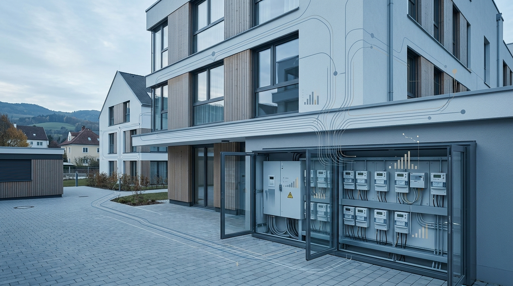

Smart Meter Österreich 2026: Die digitale Zukunft der Energieversorgung

TL;DR
Bis 2026 wird der Smart Meter Rollout in Österreich weit fortgeschritten sein, mit klaren Vorteilen für Energieeffizienz und Kostenmanagement. Die Umstellung erfordert Investitionen und eine sorgfältige Planung von Seiten der Immobilienwirtschaft, bietet aber langfristige Optimierungspotenziale.
Der flächendeckende Rollout intelligenter Stromzähler (Smart Meter) in Österreich schreitet signifikant voran und wird bis 2026 eine entscheidende Phase erreichen. Für Bauherren, Asset Manager und Facility Manager markiert dies den Beginn einer neuen Ära der Gebäudedigitalisierung und des Energiemanagements, gepaart mit neuen technischen und wirtschaftlichen Erwägungen.
Stand des Smart Meter Rollouts in Österreich
Der Smart Meter Rollout in Österreich ist eine gesetzlich verankerte Maßnahme zur Modernisierung der Energielandschaft. Bis 2026 werden voraussichtlich zwischen 70% und 90% der Haushalte und Gewerbeeinheiten mit intelligenten Messgeräten ausgestattet sein. Dieser Prozess wird schrittweise durch die Netzbetreiber vorangetrieben, wobei die technischen Standards und regulatorischen Rahmenbedingungen eine zentrale Rolle spielen. Die anfängliche Phase des Rollouts war geprägt von Pilotprojekten und der Entwicklung der notwendigen Infrastrukturen. Bis 2026 sollen die meisten großen Netzgebiete die kritische Masse erreicht haben, was die breite Nutzung von Smart-Meter-Daten für Endverbraucher und Netzbetreiber ermöglicht.
Die technologische Komponente, insbesondere die Kommunikationsinfrastruktur für die Datenübertragung, ist ein Schlüsselelement. Verschiedene Technologien wie Mobilfunk (2G, 3G, 4G, zukünftig 5G), Powerline Communication (PLC) oder auch dedizierte Funknetze kommen zum Einsatz, je nach lokaler Gegebenheit und Netzbetreiber. Die Auswahl der Technologie beeinflusst sowohl die Implementierungskosten als auch die Skalierbarkeit der Datenflüsse.
Wirtschaftliche Aspekte und Kosten für Immobilienbesitzer
Die Kosten des Smart Meter Rollouts werden primär von den Netzbetreibern getragen und über Netzentgelte refinanziert. Für Immobilieneigentümer und -verwalter entstehen über die laufenden Netzentgelte indirekte Kosten. Direkte Investitionen für die Umrüstung von internen Elektroinstallationen sind jedoch nicht ausgeschlossen, insbesondere bei älteren Gebäuden, die nicht auf die Integration moderner Messsysteme ausgelegt sind. Die Ausgaben für die eigentlichen Zähler selbst werden von den Netzbetreibern getragen. Eine genaue Kostenschätzung im Vorfeld ist schwierig, da sie von der Anzahl der verbauten Zähler, der gewählten Kommunikationstechnologie und dem Umfang der notwendigen Anpassungen in der Gebäudeinfrastruktur abhängt.
Für gewerbliche Nutzer und größere Immobilienobjekte können die Kosten jedoch signifikant sein, wenn zusätzliche Datenschnittstellen oder lokale Netzwerkintegrationen erforderlich sind. Die Investition in die entsprechende IT-Infrastruktur zur Erfassung und Verarbeitung der gewonnenen Daten muss hier mitbedacht werden. Langfristig versprechen die durch Smart Meter ermöglichten Effizienzsteigerungen und Optimierungspotenziale jedoch eine Amortisation dieser Kosten.
- Kosten für Netzbetreiber: Primär für Zähler und Infrastruktur.
- Indirekte Kosten für Endkunden: Refinanzierung über Netzentgelte.
- Potenzielle direkte Kosten: Anpassungen der internen Elektroinstallationen, IT-Infrastruktur.
- Langfristige Amortisation durch Effizienzsteigerungen.
Vorteile der Smart Meter für das Gebäudemanagement
Intelligente Messgeräte eröffnen im Gebäudemanagement vielfältige Möglichkeiten zur Optimierung des Energieverbrauchs. Die minutengenaue Erfassung von Verbrauchsdaten ermöglicht eine detaillierte Analyse und Identifikation von Einsparpotenzialen, beispielsweise durch die Erkennung von Lastspitzen oder ineffizienten Geräten. Dies ist essenziell für die Steuerung des Energieverbrauchs in Gewerbeimmobilien, Bürogebäuden oder Wohnanlagen.
Darüber hinaus erleichtern Smart Meter die Integration erneuerbarer Energien und von Elektromobilität. Die Daten können zur intelligenten Laststeuerung genutzt werden, um beispielsweise den Ladevorgang von Elektrofahrzeugen oder die Einspeisung von Solarstrom zu optimieren und so die Netzstabilität zu erhöhen und Kosten zu senken. Für Facility Manager bedeutet dies eine verbesserte Transparenz und Kontrolle über die Energieflüsse im gesamten Immobilienportfolio.
Datenschutz und Datensicherheit – Herausforderungen und Lösungsansätze
Der massenhafte Versand von Verbrauchsdaten birgt naturgemäß Datenschutz- und Datensicherheitsrisiken. Die Übertragung der Daten muss durch Verschlüsselungsverfahren und sichere Kommunikationsprotokolle geschützt werden. Die österreichische Gesetzgebung und die Vorgaben der E-Control adressieren diese Bedenken durch strenge einzuhaltende Standards.
Für Marktteilnehmer wie Asset Manager ist es entscheidend, sich über die geltenden Datenschutzbestimmungen (DSGVO) und die spezifischen Regelungen für Smart Meter zu informieren. Die Implementierung einer robusten IT-Sicherheit und die Schulung des Personals im Umgang mit sensiblen Verbrauchsdaten sind unerlässlich. Transparente Kommunikation gegenüber den Mietern und Nutzern über die Datenerfassung und -verarbeitung schafft Vertrauen.
Ausblick: Smart Meter als Basis für zukünftige Entwicklungen
Der Smart Meter Rollout bis 2026 ist nicht das Ende, sondern vielmehr ein wichtiger Meilenstein auf dem Weg zur vollständig digitalisierten Energiewirtschaft. Die gesammelten Daten bilden die Grundlage für weiterführende Anwendungen wie Smart Grids, Demand-Side-Management und die Optimierung von Energieeffizienzmaßnahmen im großen Stil. Für die Immobilienwirtschaft eröffnen sich dadurch Potenziale zur Entwicklung innovativer Dienstleistungen und zur Steigerung der Attraktivität von Gebäuden durch intelligentes Energiemanagement.
Bauherren und Immobilienentwickler sollten die fortschreitende Digitalisierung als Chance begreifen und zukünftige Bauvorhaben bereits auf die Integration von Smart Meters und anderen digitalen Energie- und Gebäudemanagementsystemen auslegen. Dies sichert die Zukunftsfähigkeit der Immobilien und ermöglicht eine proaktive Gestaltung des Energiebezugs und -verbrauchs.
Häufige Fragen
Wann ist der Smart Meter Rollout in Österreich abgeschlossen?
Ein vollständiger Abschluss ist bis 2026 bei rund 70-90% der Anschlüsse zu erwarten. Der Rollout wird nach und nach von den Netzbetreibern umgesetzt.
Wer trägt die Kosten für die Smart Meter?
Die Kosten für die Zähler und die Netzwerkinfrastruktur werden primär von den Netzbetreibern getragen und über die Netzentgelte refinanziert. Direkte Kosten entstehen nur für eventuell notwendige Anpassungen der internen Elektroinstallation.
Welche Vorteile bieten Smart Meter für Facility Manager?
Smart Meter ermöglichen eine detaillierte Verbrauchsanalyse, die Identifikation von Einsparpotenzialen, die Optimierung der Laststeuerung und die effiziente Integration erneuerbarer Energien und Elektromobilität.
Wie wird der Datenschutz bei Smart Metern in Österreich gewährleistet?
Die Datenübertragung erfolgt verschlüsselt und über sichere Kommunikationsprotokolle, gemäß strengen gesetzlichen Vorgaben und Standards der E-Control.
Muss ich als Immobilieneigentümer selbst aktiv werden?
Die Umrüstung wird von Ihrem Netzbetreiber durchgeführt. Es ist jedoch ratsam, sich über den Zeitplan zu informieren und eventuell notwendige interne Anpassungen frühzeitig zu planen.